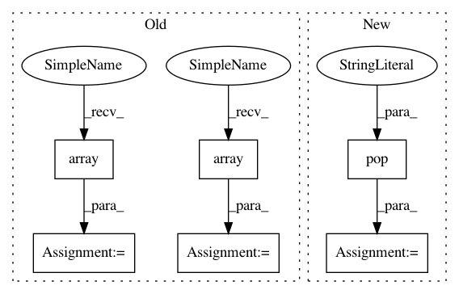

a9ab114eb64600dc6d5e297e2202e529ce2b5006,ggplot/geoms/stat_smooth.py,stat_smooth,plot_layer,#stat_smooth#Any#,13
Before Change
idx = np.argsort(x)
x = np.array(x)[idx]
y = np.array(y)[idx]
y1 = np.array(y1)[idx]
y2 = np.array(y2)[idx]
plt.plot(x, y, **layer)
if se==True:
plt.fill_between(x, y1, y2, alpha=0.2, color="grey")
After Change
else:
span = 2/3.
if "window" in layer:
window = layer.pop("window")
else:
window = int(np.ceil(len(x) / 10.0))
if "level" in layer:
level = layer.pop("level")
In pattern: SUPERPATTERN
Frequency: 3
Non-data size: 6
Instances
Project Name: has2k1/plotnine
Commit Name: a9ab114eb64600dc6d5e297e2202e529ce2b5006
Time: 2014-02-12
Author: bwillers@gmail.com
File Name: ggplot/geoms/stat_smooth.py
Class Name: stat_smooth
Method Name: plot_layer
Project Name: prody/ProDy
Commit Name: 4b9c72ee5ee2f9f9ea4b47c50035246f73e154b1
Time: 2019-03-01
Author: shz66@pitt.edu
File Name: prody/dynamics/functions.py
Class Name:
Method Name: saveModel
Project Name: prody/ProDy
Commit Name: c7a1c17074540757c03e0df7225521d950b24cc3
Time: 2019-04-09
Author: shz66@pitt.edu
File Name: prody/dynamics/functions.py
Class Name:
Method Name: saveModel
Project Name: has2k1/plotnine
Commit Name: a9ab114eb64600dc6d5e297e2202e529ce2b5006
Time: 2014-02-12
Author: bwillers@gmail.com
File Name: ggplot/geoms/stat_smooth.py
Class Name: stat_smooth
Method Name: plot_layer